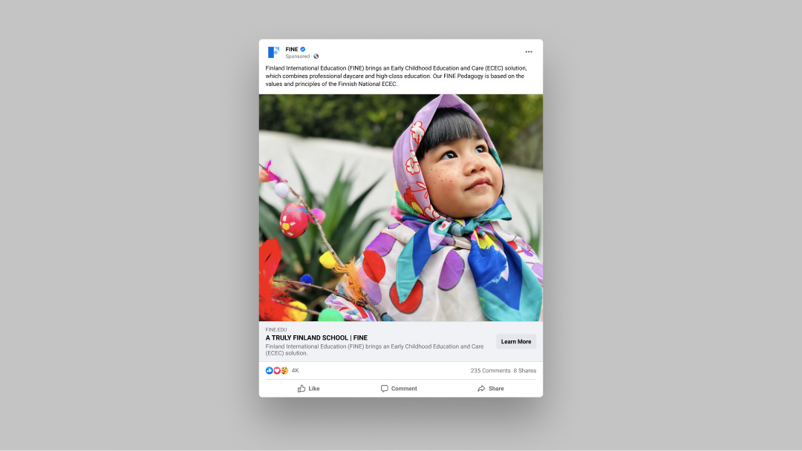
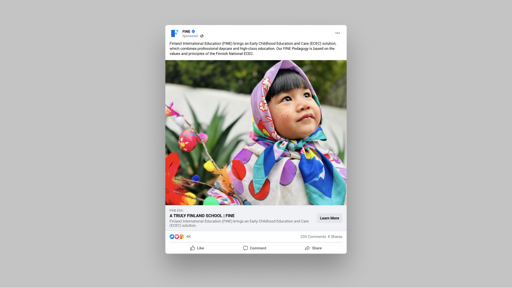
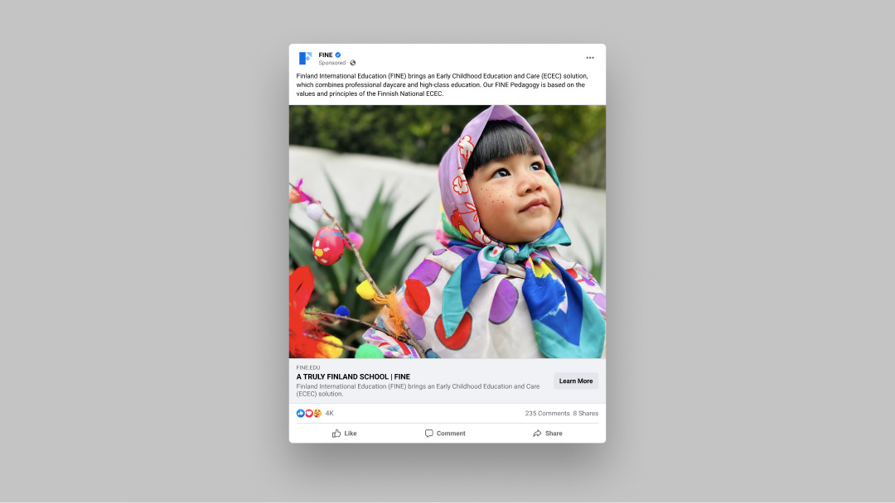

Client: Finland Early Years Foundation
SoW: Visual Identity
Date: 2023
Designer: Tom Huy
Illustration: Thuy Nguyen
FINE is a genuine Finnish preschool where children are taught to think, learn, and solve problems while playing. The brand identity takes inspiration from familiar and small things around the children, from toy blocks to comic characters, combined with characteristic images of Finland such as the national flag and nature.
